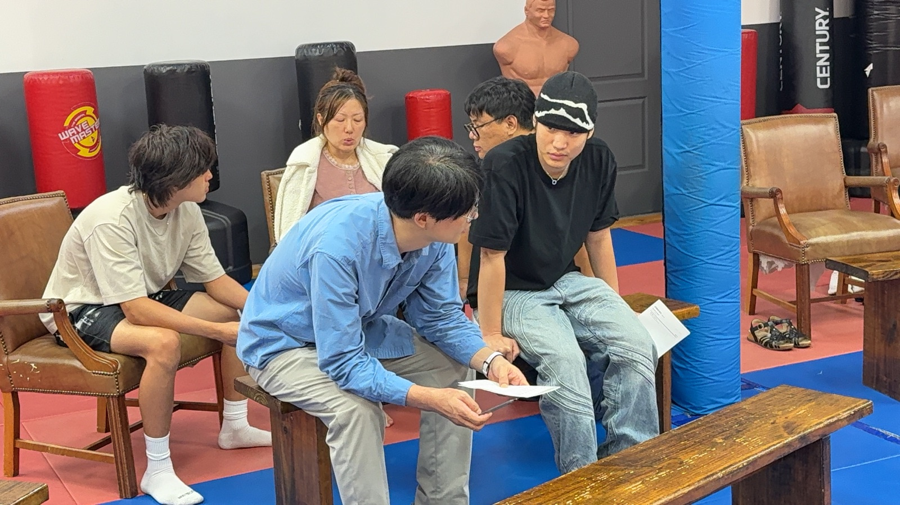

Sanford Story Church — Korean church in Sanford, Florida · Sundays 6 PM · 4942 FL-46 #1026, Sanford, FL 32771
To our neighbor in Sanford,
God’s story begins
in your life.
Hello from Story Church. We are a Korean-speaking church that opened its doors in Sanford in the fall of 2026. Every Sunday at six we gather to sing, hear the Word, talk it over in a circle, and then share dinner.
Our name comes from Second Corinthians: “You are a letter from Christ.” Every person is a letter God is still writing. Yours included — and the ink is not dry yet.
This SundayWhat to expect
Why “Story”The name
You show that you are a letter from Christ, the result of our ministry, written not with ink but with the Spirit of the living God, not on tablets of stone but on tablets of human hearts.
2 Corinthians 3:3
When Paul was asked to prove himself, he did not produce a reference letter. He pointed at the people. You are our letter, he said. The gospel is written on people, not paper. That is why we are called Story — and why this whole page is a letter.
Four StoriesWhat we hold on to
- 01His StoryThe story of the Lord who saved us. The gospel stays at the center of everything we do.
- 02My StoryThe story I live out. Not a spectator — a witness.
- 03Deep StoryThe story that deepens through Word and prayer. One disciple at a time.
- 04Our StoryThe story we write together. A community that shows Christ where we live.

When & WhereFinding us
6:00 PMWorship is in Korean · About an hour · Dinner together afterward
Nothing to prepare. Sunday at six — just come as you are.
Last Sunday’s message is on YouTube; the photos are on Instagram.